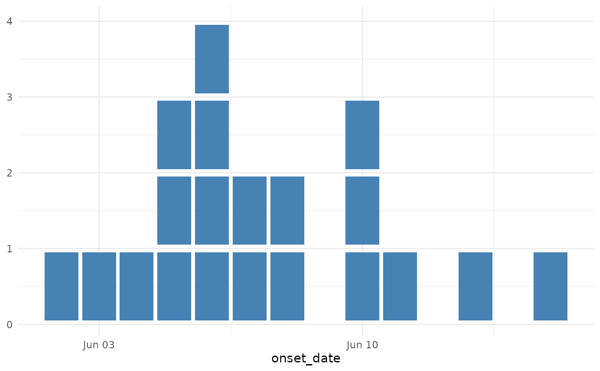

A convenience function that sets y-axis breaks to integers only, which is appropriate for count data in epidemic curves. This ensures the y-axis never shows decimal values like 2.5 cases.
Arguments
- ...
Additional arguments passed to
ggplot2::scale_y_continuous().
Examples
library(ggplot2)
cases <- simulate_outbreak(n = 20)
ggplot(cases, aes(x = onset_date)) +
geom_epicurve(fill = "steelblue") +
scale_y_epicurve() +
theme_minimal()
